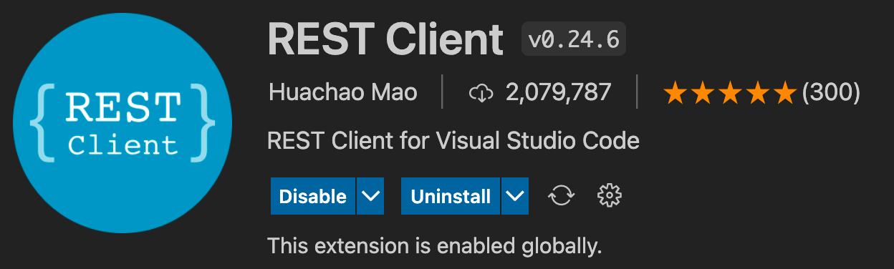
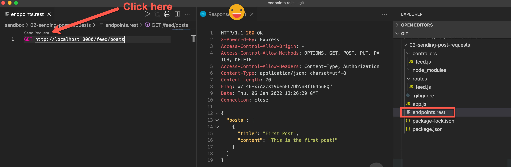
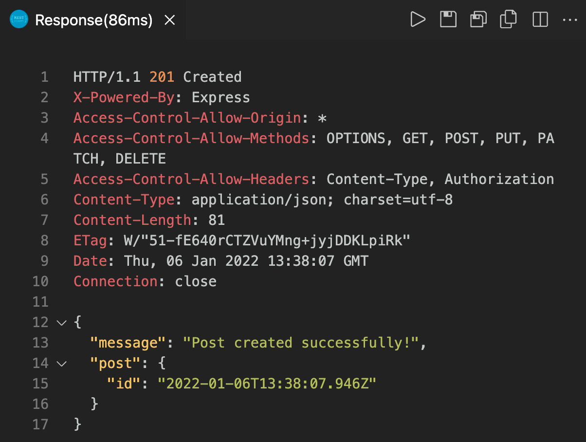

Overview
Today's team activity will give you a chance to practice your REST API Skills.
Assignment
-
Download this zip file that came from the Academind course.
-
Examine the code, and discuss together what the code is doing. How many routes are there? What will the routes look like when called by a frontend? What is the application actually doing?
-
Run npm install and npm start
-
Now that your server is running, let's test these REST API endpoints using a REST client. There are many good options out there. The Academind course uses Postman. Another amazing alternative is a VS Code extension that allows you to test RESTful API endpoints in VS code. This extension is called REST Client. Search for it in the extensions:
 -
With this extension installed, create a file with the following extension: .rest. Place this file somewhere in your project. In it, you can specify any api endpoint/route to test. We currently have this node application running locally on port 8080, so we can test it by adding that route to our rest file, and clicking the Send Request button as shown in the following image:
One really nice thing about using the REST Client extension, is that as you test your endpoints, this rest file will grow, essentially becoming the documentation needed for the frontend developers to build their end when the time comes.
-
Next, create another route in your rest file to test a POST request. You will likely need to look at the REST Client extension documentation or use google to figure out how to make additional requests available in this file, and how to do POSTs. Once it's working, you should see something like this:
If you try sending the GET request after this, you'll notice that it doesn't show the updated data that you sent with your previous POST request. This is because our simple application has no database and no way to save data. But modifying this is something you've done on many occasions using MongoDB, and that aspect will be exactly the same.
-
Your final task for this project will is extremely important. Anytime a backend team works with a frontend team, there needs to be documentation in place to define where the two ends of the project will meet. This documentation is frequently referred to as an API Contract. An API Contract will provide the frontend team with every route and piece of data necessary for retrieving data from the API, and it also provides the backend team with a clearly defined set of deliverables so they know what to deliver and how. There are several common ways of creating these contracts used in industry today:
-
Postman has a way of exporting requests that can then be shared with others.
-
There are tools like Swagger.io that create a really nice, testable user interface that can be used by both the frontend and the backend teams to test endpoints.
-
We can also use the rest file that we created earlier. When you have a larger project, your rest file(s) may be much larger, but their function is similar to the other two tools mentioned. Additionally, the frontend team can download the REST Client extension as well and have a really easy way to test these endpoints.
For your task, pick one of these to use to provide API documentation (or an API contract) to a pretend frontend team. This should have everything they will need to build the application (endpoints, data, types of responses, parameters, authentication if present, etc.). While this application is simple, your documentation should be clear and professional.
-
Submission
Submit the API Contract in I-learn.